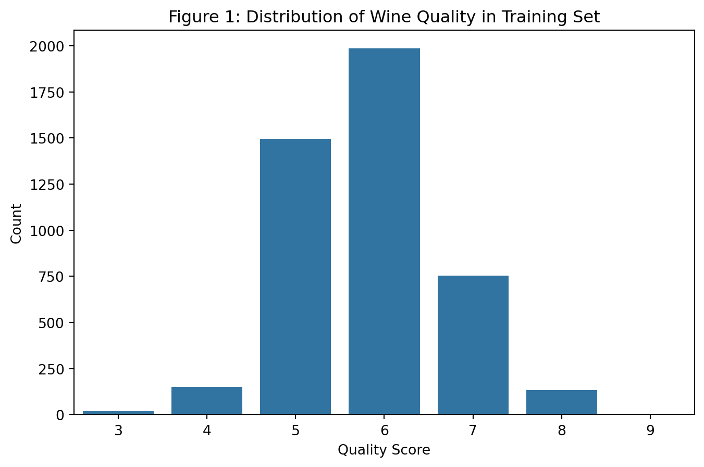
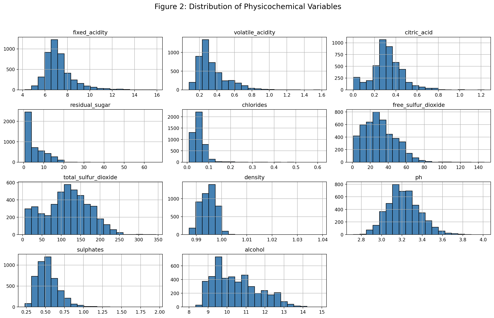
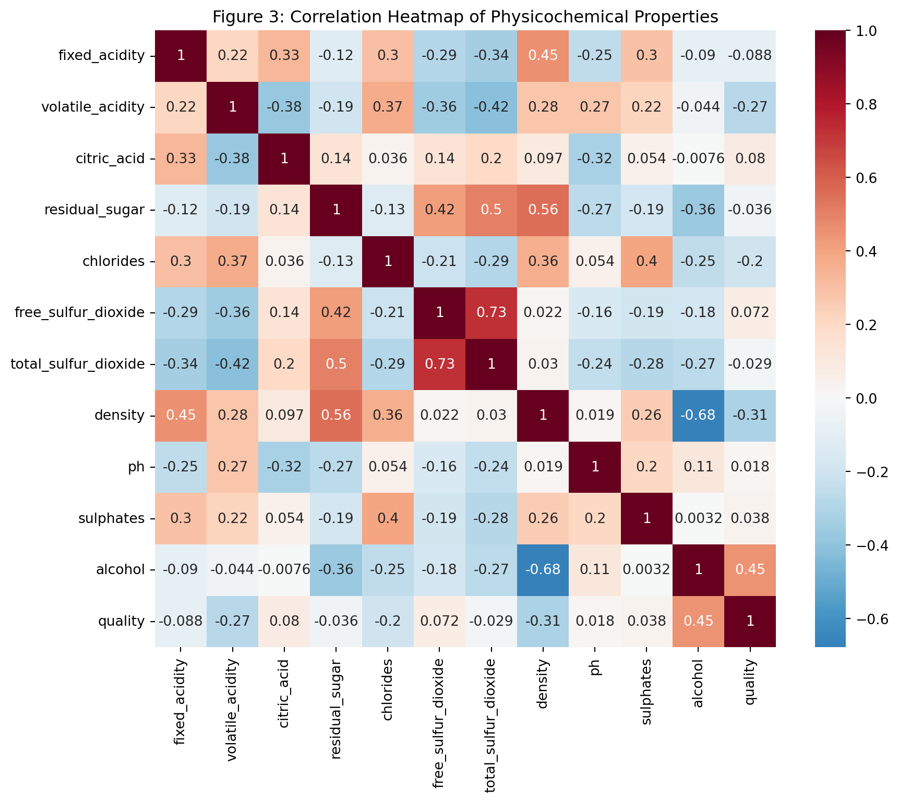
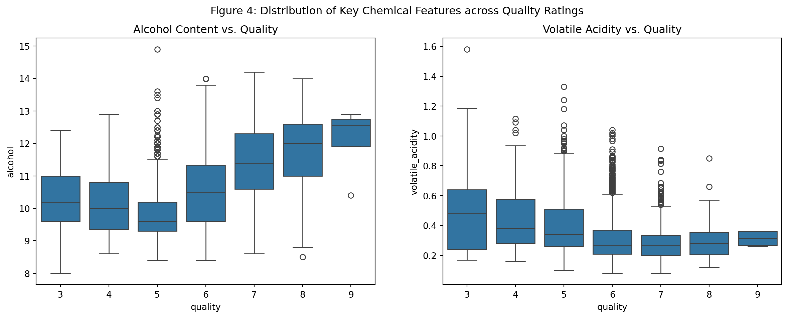
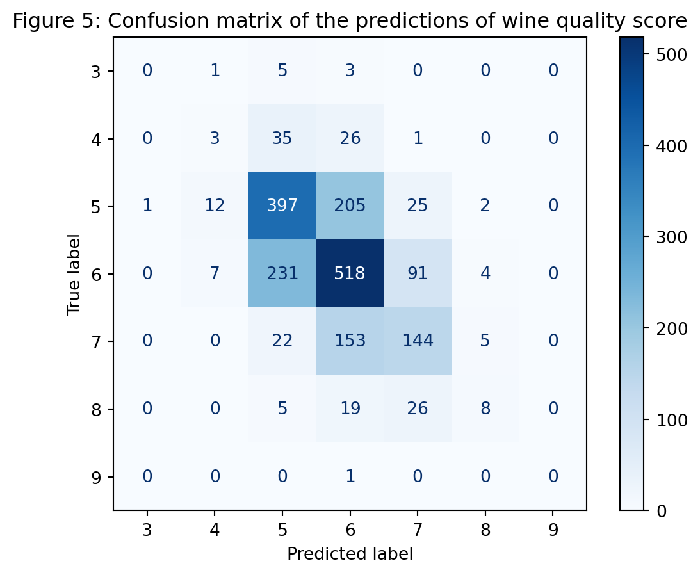

# load library and dataset
import pandas as pd
import requests
from io import StringIO
# load data from the original source on the web
red_url = "https://archive.ics.uci.edu/ml/machine-learning-databases/wine-quality/winequality-red.csv"
white_url = "https://archive.ics.uci.edu/ml/machine-learning-databases/wine-quality/winequality-white.csv"
# the raw files use semicolons as delimiters
red_content = requests.get(red_url).text
white_content = requests.get(white_url).text
red = pd.read_csv(StringIO(red_content), sep=';')
white = pd.read_csv(StringIO(white_content), sep=';')Wine Quality Analysis
Summary
- Data Collection and Preparation - Combined red and white wine datasets and added a new column wine_type (white/red).
- Data Partitioning Split data into training and testing sets (70-30)
- EDA - Exploratory Data Analysis to identify how variables correlate with the response variable.
- Model Training - Used KNN classifier.
- Model Evaluation - Evaluate predictions made on the test set. Metrics used were F1 score, accuracy, classification report and confusion matrix.
- Results and Discussion - Results of the model and conclusion
Abstract
This study explores the relationship between physicochemical properties and wine quality using the Wine Quality dataset. We apply a k-Nearest Neighbors (kNN) classification model to predict quality scores based on chemical attributes such as acidity, sugar content, and alcohol levels.
The dataset consists of 4,898 observations with no missing values. A preprocessing pipeline including feature scaling and encoding was implemented, and hyperparameters were tuned using 5-fold cross-validation.
The final model achieved an accuracy of 0.55 and a weighted F1-score of 0.54, performing best on the most common quality classes. Results indicate that class imbalance affects performance, particularly for rare quality scores. Future improvements could include alternative models and resampling techniques.
Introduction
(I) Background Introduction :
This project explores the chemical properties of red and white Vinho Verde wines produced in north Portugal. Although wine quality is traditionally evaluated through sensory analysis, it can also be time-consuming, and difficult to reproduce consistently. As a result, there is growing interest in using data-driven methods to analyze the physicochemical characteristics of wine and predict its perceived quality (Cortez et al., 2009).
The dataset used in this study contains several chemical attributes of wine samples, including acidity levels, sugar content, alcohol concentration, and sulfur dioxide levels. These features provide a description of each wine’s composition and may contain patterns that relate to perceived quality scores.
Machine learning techniques with the scikit-learn library (Pedregosa et al., 2011) can help uncover these patterns and provide predictive models for wine quality. In this project, we apply a k-Nearest Neighbors (kNN) classification algorithm (Cover & Hart, 1967), a distance-based method that predicts the quality of a wine sample by comparing its physicochemical profile to similar observations in the training dataset. Specifically, this study seeks to answer: To what extent can the physicochemical properties of wine be used to accurately classify its quality rating on a scale of 1–10, and for which quality levels does the model struggle to distinguish between observations?
(II) Data Description :
The data is sourced from the UCI Machine Leaning Repository (Cortez et al., 2009). We will be working with the winequality-red.csv and winequality-white.csv dataset. winequality-red.csv contains 1599 observations and winequality-white.csv contains 4898 observations. Both datasets contain 12 variables including : - fixed acidity (dbl) - concentration of fixed acids in the wine - volatile acidity (dbl) - amount of acetic acid, which can give a vinegar taste - citric acid (dbl) – concentration of citric acid - residual sugar (dbl) – amount of sugar remaining after fermentation - chlorides (dbl) – salt content of the wine - free sulfur dioxide (dbl) – free SO₂ level - total sulfur dioxide (dbl) – total SO₂ level - density (dbl) – density of the wine - pH (dbl) – acidity level of the wine - sulphates (dbl) – potassium sulphate level (wine preservative) - alcohol (dbl) – alcohol percentage by volume - quality (int) – quality score assigned to the wine with score of 1 to 10 (target variable)
Methods
### 1. Data Acquisition The primary data source consists of two separate CSV files hosted on the UCI Machine Learning Repository (Cortez et al., 2009), representing red and white wine samples. We begin by loading these files directly into our environment.
print(red.shape)
print(white.shape)(1599, 12)
(4898, 12)2. Data Cleaning and Standardization
To ensure the datasets can be merged and analyzed seamlessly, we standardize the column names. We convert all headers to lowercase and replace spaces with underscores to prevent syntax errors.
# clean column names
red.columns = red.columns.str.strip().str.lower().str.replace(" ", "_")
white.columns = white.columns.str.strip().str.lower().str.replace(" ", "_")3. Data Integration
Since we plan to analyze both wine types together, we preserve the identity of each observation before merging. We add a categorical column wine_type to each dataframe and then concatenate them into a single tidy dataset and saved to the processed data folder.
# add wine type labels
red["wine_type"] = "red"
white["wine_type"] = "white"
# merge the datasets
wine = pd.concat([red, white], ignore_index = True)
# save to processed folder
wine.to_csv("../data/processed/wine.csv", index= False)red["wine_type"] = "red"
white["wine_type"] = "white"
# combine datasets
wine = pd.concat([red, white], ignore_index=True)
wine.head().style.set_caption("Table 1: Combined Wine Dataset Preview")| fixed_acidity | volatile_acidity | citric_acid | residual_sugar | chlorides | free_sulfur_dioxide | total_sulfur_dioxide | density | ph | sulphates | alcohol | quality | wine_type | |
|---|---|---|---|---|---|---|---|---|---|---|---|---|---|
| 0 | 7.400000 | 0.700000 | 0.000000 | 1.900000 | 0.076000 | 11.000000 | 34.000000 | 0.997800 | 3.510000 | 0.560000 | 9.400000 | 5 | red |
| 1 | 7.800000 | 0.880000 | 0.000000 | 2.600000 | 0.098000 | 25.000000 | 67.000000 | 0.996800 | 3.200000 | 0.680000 | 9.800000 | 5 | red |
| 2 | 7.800000 | 0.760000 | 0.040000 | 2.300000 | 0.092000 | 15.000000 | 54.000000 | 0.997000 | 3.260000 | 0.650000 | 9.800000 | 5 | red |
| 3 | 11.200000 | 0.280000 | 0.560000 | 1.900000 | 0.075000 | 17.000000 | 60.000000 | 0.998000 | 3.160000 | 0.580000 | 9.800000 | 6 | red |
| 4 | 7.400000 | 0.700000 | 0.000000 | 1.900000 | 0.076000 | 11.000000 | 34.000000 | 0.997800 | 3.510000 | 0.560000 | 9.400000 | 5 | red |
Prior to partitioning the data, we verified the completeness of the dataset. As shown in the output below, there are no missing values across the 13 variables. This simplifies our pipeline as no imputation strategies are required to maintain data integrity.
# check for missing values to ensure the dataset is ready for machine learning
missing_values_table = wine.isnull().sum().to_frame(name="Missing Count")
missing_values_table.style.set_caption("Table 2: Missing Value Analysis")| Missing Count | |
|---|---|
| fixed_acidity | 0 |
| volatile_acidity | 0 |
| citric_acid | 0 |
| residual_sugar | 0 |
| chlorides | 0 |
| free_sulfur_dioxide | 0 |
| total_sulfur_dioxide | 0 |
| density | 0 |
| ph | 0 |
| sulphates | 0 |
| alcohol | 0 |
| quality | 0 |
| wine_type | 0 |
### 4. Data Partitioning (Train/Test Split) To avoid data leakage and ensure we can evaluate our model’s performance on unseen data, we split the data. We use a 70% training and 30% testing split. We also use stratification on the quality variable to ensure both sets have a similar distribution of quality scores.
from sklearn.model_selection import train_test_split
train, test = train_test_split(
wine,
test_size=0.30,
random_state=42,
stratify=wine["quality"]
)
print(train.shape)
print(test.shape)(4547, 13)
(1950, 13)### 5. Exploratory Data Analysis (EDA) With our training data isolated, we perform a summary analysis to understand the chemical difference between high-quality and low-quality wines.
import seaborn as sns
import matplotlib.pyplot as pltFirst, we visualize the distribution of our target variable, quality, to check for class imbalances that might affect our classification results.
# visualize the target variable
plt.figure(figsize=(8, 5))
sns.countplot(data=train, x="quality")
plt.title("Figure 1: Distribution of Wine Quality in Training Set")
plt.xlabel("Quality Score")
plt.ylabel("Count")
plt.show()
The historgram reveals that the majority of wines are rated as 5 or 6, while extreme values (3 or 9) are rare.
# distribution of all physicochemical features
# plot histograms for all numeric features to check for skewness
train.drop(columns='quality').hist(bins=20, figsize=(15, 10), color='steelblue', edgecolor='black')
plt.suptitle("Figure 2: Distribution of Physicochemical Variables", fontsize=16)
plt.tight_layout(rect=[0, 0.03, 1, 0.95])
plt.show()
In Figure 2, we visualized the distribution of all physicochemical features to assess skewness. While features like pH and density follow a relatively normal distribution, we observed significant right-skewness in residual_sugar and clorides. Additionally, we noted vastly different scales across variables (e.g., total_sulfur_dioxide vs. density), which could lead to biased results in a distance-based algorithm like kNN. These observations suggest that data transformation or feature scaling might be necessary to improve model performance
# calculate the correlation matrix to identify which features influence quality
plt.figure(figsize=(10, 8))
correlation_matrix = train.corr(numeric_only=True)
sns.heatmap(correlation_matrix, annot=True, cmap='RdBu_r', center=0)
plt.title("Figure 3: Correlation Heatmap of Physicochemical Properties")
plt.show()
To identify potential predictors for our classification model, we generated a correlation heatmap (Figure 3). This visualization shows that alcohol has the strongest positive correlation with quality, while volatile acidity shows notable nagative correlations.
# summary statistics for key chemical features
eda_summary = train.groupby("quality").mean(numeric_only=True)
eda_summary.style.set_caption("Table 3: Mean Chemical Properties by Quality Score")| fixed_acidity | volatile_acidity | citric_acid | residual_sugar | chlorides | free_sulfur_dioxide | total_sulfur_dioxide | density | ph | sulphates | alcohol | |
|---|---|---|---|---|---|---|---|---|---|---|---|
| quality | |||||||||||
| 3 | 7.990476 | 0.545000 | 0.303810 | 4.619048 | 0.078667 | 24.738095 | 95.357143 | 0.995865 | 3.271429 | 0.499048 | 10.169048 |
| 4 | 7.362252 | 0.441026 | 0.280861 | 4.497020 | 0.058603 | 20.874172 | 105.917219 | 0.994999 | 3.227285 | 0.496887 | 10.112252 |
| 5 | 7.355481 | 0.396484 | 0.306130 | 5.789071 | 0.065277 | 30.301136 | 120.064505 | 0.995921 | 3.212941 | 0.528249 | 9.827137 |
| 6 | 7.212040 | 0.313685 | 0.323184 | 5.602821 | 0.054253 | 31.066751 | 114.730227 | 0.994640 | 3.217693 | 0.535199 | 10.577204 |
| 7 | 7.133444 | 0.286185 | 0.335311 | 4.719205 | 0.045535 | 30.576159 | 108.654967 | 0.993153 | 3.227947 | 0.547881 | 11.359832 |
| 8 | 6.785185 | 0.290333 | 0.325037 | 5.516667 | 0.040644 | 35.155556 | 121.155556 | 0.992439 | 3.220222 | 0.503481 | 11.674815 |
| 9 | 7.425000 | 0.312500 | 0.392500 | 4.650000 | 0.026500 | 35.000000 | 110.250000 | 0.991688 | 3.315000 | 0.462500 | 12.100000 |
This table summarizes how features like alcohol and volatile_acidity change as the quality score increases.
Since alcohol and acidity seem important, we look at them more closely across different quality levels.
# visualize feature distribution by quality
fig, axes = plt.subplots(1, 2, figsize=(15, 5))
# alcohol vs quality
sns.boxplot(data=train, x='quality', y='alcohol', ax=axes[0])
axes[0].set_title("Alcohol Content vs. Quality")
# volatile Acidity vs quality
sns.boxplot(data=train, x='quality', y='volatile_acidity', ax=axes[1])
axes[1].set_title("Volatile Acidity vs. Quality")
plt.suptitle("Figure 4: Distribution of Key Chemical Features across Quality Ratings")
plt.show()
Figure 4 illustrates the relationship between quality and our key chemical features. We observe there is a general upward trend in alcohol content as quality improves. Similarly, volatile acidity shows an overall downward trajectory as quality increases.
In summary, our exploratory analysis confirms that while no single physicochemical property perfectly separates the wine quality ratings, distinct patterns exist in features like alcohol and volatile_acidity.
Although the correlation heatmap (Figure 3) reveals that some variables have weaker linear relationships with the target, we have elected to retain the full set of 11 features for the initial classification phase. This approach ensures that the kNN algorithm can leverage the high-dimensional neighborhoods of the data, capturing complex multivariate interactions that simple pairwise correlations might miss.
However, given the significant disparities in feature scales identified in our histograms (Figure 2), standardization (Z-score scaling) will be a mandatory step in the modeling pipeline to ensure that distance-based calculations are not biased by the magnitude of individual variables. The dataset is now cleaned, verified for integrity, and prepared for the training of our kNN classifier
We will now implement a KNN model to classify each wine into their quality group [1,10]
from sklearn.compose import make_column_transformer
from sklearn.pipeline import Pipeline, make_pipeline
from sklearn.preprocessing import OneHotEncoder, OrdinalEncoder, StandardScalerX_train = train.drop(columns=["quality"])
y_train = train["quality"]
X_test = test.drop(columns=["quality"])
y_test = test["quality"]This cell separates features and target for both the training and test sets. - X_train and X_test contain all predictor variables (everything except “quality”). - y_train and y_test contain the target variable “quality” that I want to predict.
Doing this is necessary because scikit‑learn models expect X (features) and y (labels) as separate inputs.
# preprocess the data, make the pipeline
categorical_variable = ["wine_type"]
numerical_variable = ["fixed_acidity",
"volatile_acidity",
"citric_acid",
"residual_sugar",
"chlorides",
"free_sulfur_dioxide",
"total_sulfur_dioxide",
"density",
"ph",
"sulphates",
"alcohol"]
target = ["quality"]
preprocessor = make_column_transformer(
((StandardScaler(), numerical_variable)),
(OneHotEncoder(drop="if_binary"), categorical_variable))
preprocessorColumnTransformer(transformers=[('standardscaler', StandardScaler(),
['fixed_acidity', 'volatile_acidity',
'citric_acid', 'residual_sugar', 'chlorides',
'free_sulfur_dioxide', 'total_sulfur_dioxide',
'density', 'ph', 'sulphates', 'alcohol']),
('onehotencoder',
OneHotEncoder(drop='if_binary'),
['wine_type'])])In a Jupyter environment, please rerun this cell to show the HTML representation or trust the notebook. On GitHub, the HTML representation is unable to render, please try loading this page with nbviewer.org.
Parameters
['fixed_acidity', 'volatile_acidity', 'citric_acid', 'residual_sugar', 'chlorides', 'free_sulfur_dioxide', 'total_sulfur_dioxide', 'density', 'ph', 'sulphates', 'alcohol']
Parameters
['wine_type']
Parameters
In this cell, we categorize the columns by type, such as categorical and numerical so that appropriate transformations can be applied. We also record “quality” as the target variable for clarity.
This cell creates a ColumnTransformer called preprocessor which scales all numerical features with StandardScaler and one‑hot encodes the categorical “wine_type” feature, ensuring that the model receives numeric inputs on a comparable scale.
from sklearn.neighbors import KNeighborsClassifier
knn = KNeighborsClassifier()
pipeline = Pipeline([
("preprocessing", preprocessor),
("knn", knn)
])We are mkaing the knn classifier model to predict wine quality based on the nearest training observations.
The pipeline applies the preprocessor first, to transform the data and then fits the KNN classifier, which guarantees that the exact same preprocessing steps are applied during both training and predicting.
from sklearn.model_selection import GridSearchCV
from sklearn.model_selection import StratifiedKFold
param_grid = {
"knn__n_neighbors": [3, 5, 7, 9, 11, 15]}
grid_search = GridSearchCV(
pipeline,
param_grid,
cv = StratifiedKFold(n_splits=5, shuffle=True),
scoring = "f1_weighted"
)
grid_search.fit(X_train, y_train)
best_param = grid_search.best_params_
print(best_param)/Users/siluni/Downloads/python/.venv/lib/python3.13/site-packages/sklearn/model_selection/_split.py:813: UserWarning: The least populated class in y has only 4 members, which is less than n_splits=5.
warnings.warn({'knn__n_neighbors': 7}model = grid_search.best_estimator_
y_pred = model.predict(X_test)
y_predarray([7, 5, 5, ..., 6, 5, 7], shape=(1950,))Now, we will search over different model settings in a statistically reliable way, using grid search.
First, we defined a parameter grid for n_neighbors of the KNN step in the pipeline, the we created a stratified 5‑fold cross‑validation splitter to preserve class balance across folds, and constructed a GridSearchCV object that evaluates each candidate value using the weighted F1 score due to class imbalance.
This cell runs the grid search on the training data and then prints the best hyperparameter configuration, allowing us to determine the most optomal number of n_neighbors for this model.
#calculate weighted F1 score
from sklearn.metrics import f1_score
f1 = f1_score(y_test, y_pred, average='weighted')
print(f"F1 score: {f1}")F1 score: 0.53686312404164The calculated F1 score of the model (0.539) suggests that the model is okay but not great. The model is picking the majority classes better than rare classes so there is a slight class imbalance.
# create confusion matrix
from sklearn.metrics import confusion_matrix, ConfusionMatrixDisplay
cm = confusion_matrix(y_test, y_pred, labels=model.classes_)
disp = ConfusionMatrixDisplay(confusion_matrix=cm, display_labels=model.classes_)
disp.plot(cmap='Blues')
plt.title("Figure 5: Confusion matrix of the predictions of wine quality score")Text(0.5, 1.0, 'Figure 5: Confusion matrix of the predictions of wine quality score')
From the confusion matrix, we can see that most of the correct predictions are in quality scores of 5 and 6 which are majority classes and some predictions of actual 3,4,8 quality scores are also mistakenly classified as 5 or 6 showing that the model is biased towards majority classes.
#create classification report
from sklearn.metrics import classification_report
report = classification_report(y_test, y_pred, output_dict=True)
report_df = pd.DataFrame(report).transpose()
report_df.style.set_caption("Table 4: Classification report of the kNN model")/Users/siluni/Downloads/python/.venv/lib/python3.13/site-packages/sklearn/metrics/_classification.py:1833: UndefinedMetricWarning: Precision is ill-defined and being set to 0.0 in labels with no predicted samples. Use `zero_division` parameter to control this behavior.
_warn_prf(average, modifier, f"{metric.capitalize()} is", result.shape[0])
/Users/siluni/Downloads/python/.venv/lib/python3.13/site-packages/sklearn/metrics/_classification.py:1833: UndefinedMetricWarning: Precision is ill-defined and being set to 0.0 in labels with no predicted samples. Use `zero_division` parameter to control this behavior.
_warn_prf(average, modifier, f"{metric.capitalize()} is", result.shape[0])
/Users/siluni/Downloads/python/.venv/lib/python3.13/site-packages/sklearn/metrics/_classification.py:1833: UndefinedMetricWarning: Precision is ill-defined and being set to 0.0 in labels with no predicted samples. Use `zero_division` parameter to control this behavior.
_warn_prf(average, modifier, f"{metric.capitalize()} is", result.shape[0])| precision | recall | f1-score | support | |
|---|---|---|---|---|
| 3 | 0.000000 | 0.000000 | 0.000000 | 9.000000 |
| 4 | 0.130435 | 0.046154 | 0.068182 | 65.000000 |
| 5 | 0.571223 | 0.618380 | 0.593867 | 642.000000 |
| 6 | 0.560000 | 0.608696 | 0.583333 | 851.000000 |
| 7 | 0.501742 | 0.444444 | 0.471358 | 324.000000 |
| 8 | 0.421053 | 0.137931 | 0.207792 | 58.000000 |
| 9 | 0.000000 | 0.000000 | 0.000000 | 1.000000 |
| accuracy | 0.548718 | 0.548718 | 0.548718 | 0.548718 |
| macro avg | 0.312065 | 0.265086 | 0.274933 | 1950.000000 |
| weighted avg | 0.532692 | 0.548718 | 0.536863 | 1950.000000 |
Classification Report
The model predicts the most common wine quality scores (5 and 6) reasonably well, with F1-scores around 0.58–0.59, reflecting good precision and recall for these classes.
Rare quality scores (3, 4, 8, 9) have very low F1-scores, indicating that the model struggles to identify wines with these scores correctly, likely due to their low frequency in the dataset.
#calculate accuracy score
from sklearn.metrics import accuracy_score
accuracy = model.score(X_test, y_test)
print(f"Accuracy: {accuracy:.3f}")Accuracy: 0.549The model predicts the exact wine quality accurately 55% of the time. This accuracy is higher than random guessing (1/10), so the model learns something, but still misses accurate predictions almost half of the time.
## Results In answering our research question regarding the extent of kNN’s predictive power, our model, optimized through cross-validation, achieved a classification accuracy of approximately 55% and a weighted F1-score of 0.54. As shown in the confusion matrix, the model performs strongest when predicting the most frequent quality scores (5 and 6), which represent the majority of the dataset. However, addressing the second part of our question, the model struggles significantly to distinguish between observations at the extremes of the scale (quality scores of 3, 4, 8, and 9). These results confirm that while chemical properties provide a strong signal for average wine quality, they are less effective at distinguishing between exceptionally high or low quality wines without a more balanced training set.
Discussion
Summary of Findings
In this study, we explored whether the physicochemical properties of wine could accurately predict its quality rating. Our k-Nearest Neighbors (kNN) model achieved an accuracy of 55%. The model performed best at identifying wines with quality scores of 5 and 6, which represent the majority of our dataset. However, it significantly struggled to correctly classify wines at the high (8+) and low (3-4) ends of the quality scale.
Expectations vs. Reality
We expected that by including all 11 physicochemical features and applying StandardScaler, the kNN model would be able to draw clear boundaries between quality classes. While our EDA showed that alcohol and volatile acidity are strong indicators, the model’s moderate accuracy suggests that there is a high degree of overlap in the chemical neighborhoods of different wine qualities. Our results align with the initial findings of Cortez et al. (2009), who noted that while chemical properties are influential, human preference remains a highly complex variable to model mathematically.
Impact of Findings
The impact of these findings for the wine industry is that automated chemical analysis can serve as a useful initial screening tool to identify average wines. However, because the model struggles with rare quality scores, it cannot currently replace human expert sensory evaluation for identifying premium or defective products. For winemakers, this suggests that chemical composition is a strong foundation for quality, but not the entire story.
Future Questions
This study leads to several interesting questions for future research: 1. Would a more complex model, such as a Random Forest or Support Vector Machine (SVM), better handle the nonlinear relationships in the data? 2. Are there other chemical markers, such as specific flavor compounds or tannins, that were not in this dataset but could improve prediction accuracy?
References
Cortez, P., Cerdeira, A., Almeida, F., Matos, T., & Reis, J. (2009). Modeling wine preferences by data mining from physicochemical properties. Decision Support Systems, 47(4), 547-553. https://doi.org/10.1016/j.dss.2009.05.016
Cortez, P., Cerdeira, A., Almeida, F., Matos, T., & Reis, J. (2009). Wine Quality [Dataset]. UCI Machine Learning Repository. https://doi.org/10.24432/C56S3T.
Cover, T., & Hart, P. (1967). Nearest neighbor pattern classification. IEEE Transactions on Information Theory, 13(1), 21-27. https://doi.org/10.1109/TIT.1967.1053964
Pedregosa, F., et al. (2011). Scikit-learn: Machine Learning in Python. Journal of Machine Learning Research, 12, 2825–2830.